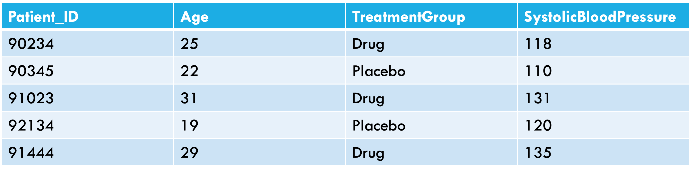
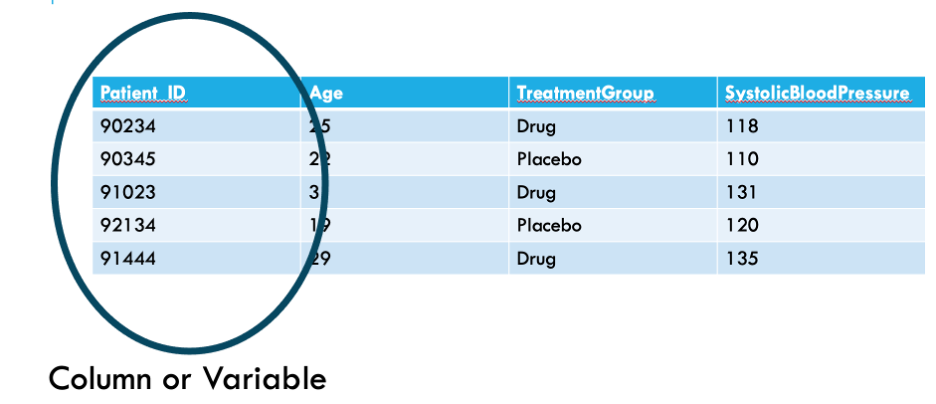
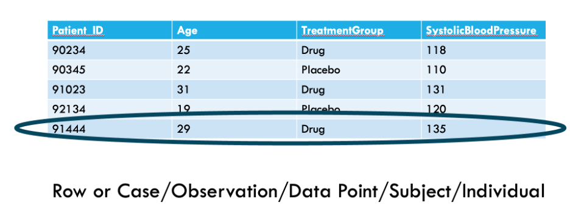
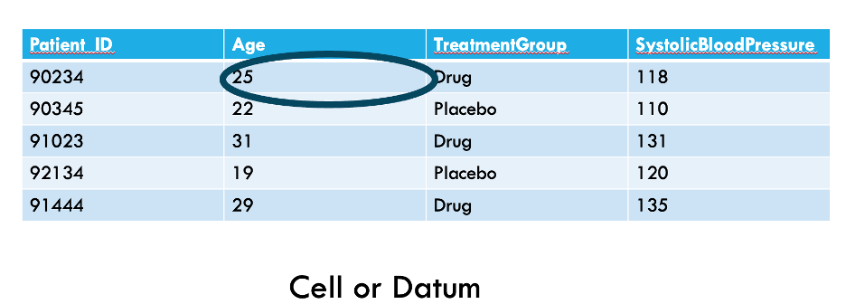
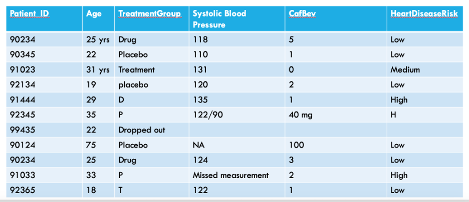

Managing data and building pipelines in R
Link to today’s materials
In R, go to file–> new project –> version control–>git–>copy and paste the directory name (materials)
Make sure materials fills in as the name of the directory
Store in a place you can find!
Open the R script eeid_data_management.R so you can run it while I talk
Field, lab, or software program to R
The first section will focus on best practices for organizing data from the field, lab, or elsewhere that will make the transition to wrangling it in R easiest.
Learning objectives
Improve data management through:
- Building pipelines
- File management
- Maintaining relational structure between data types
- Meta-data tracking
- Datasheet format
- Data management in R using the tidyverse
Why pipelines?
Pipelines are ways of carefully recording and systematizing the steps you take to work with your data
Ideally your project will depend on:
- Some data files: spreadsheets storing data (.csv files from Excel)
- Some scripts (more on this later)
- Something that tells you how these things go together: README file
- https://github.com/DataInvestigations/bats_group_project/blob/main/README.md
Getting started
What will your data look like and how will you analyze it?
- Determine what your data points/observations/sampling units are
- Use these to link across data types
- Stay consistent by planning ahead
- spend a little time up front to save lots of time later
Always…
- Scan datasheets to save electronically (cloud is best) and make copies. Long-term storage on acid-free paper.
- Retain unaltered original copies of datasheets or output files
- Enter data from scanned sheets where you can check or make notes as needed
- Develop a quality control procedure
Consider…
- Organizing as if you will continuously build the dataset and anticipate you will need to go back
- “If someone continued this project, is my data pipeline in a place I could hand it over seamlessly?”
An example with temperature logger data
- Multiple sites; multiple loggers; hundreds of thousands of recordings
This can quickly become overwhelming with an abundance of folders and files; each containing many dates and readings, lots of varying information
Tips for organizing bulky data streams
- Create a system before you deploy a single logger!
- What will you call each logger? Will you erase data from loggers? At what intervals? Where will you store your metadata?
For example:
- Organize by temperature logger and give each a unique name
- Add prefix to all temperature files with site name (bulk rename utility for PCs/select multiple and rename on Mac)
- Minimize transfer of files by keeping folder structure simple (don’t create unnecessary sub-folders)
- Create a metadata file that includes logger deployment with fields such as loggerID, site, date deployed, date retrieved, etc.
Metadata and data dictionaries | preserving tangential information
How do you store data that is important but not specific to a single ‘observation’?
- Trap effort, environmental conditions during sampling event, site characteristics, etc
- Create a separate metadata file that includes the same variables as observational data (e.g., site, date, species)
Metadata and data dictionaries | preserving tangential information
How would someone stepping into the project understand the data you collect?
Make a data dictionary:
- A table of definitions in a spreadsheet (or other program)
- Each variable from the datasheet is described thoroughly, including precisely what it measures
- https://docs.google.com/spreadsheets/d/1uuWAVDz71uKa8i0SiL71CgllEZo54WAu5tYsI7YxVaw/edit?gid=0#gid=0
Anatomy of a datasheet
- What should our datasheets look like?

Anatomy of a datasheet

Anatomy of a datasheet

Anatomy of a datasheet

What’s wrong with this datasheet?

Data entry best practices
- Variable names should be short but descriptive
- We want to know what each variable is, but we also need to type variable names often when coding
Data entry best practices
- There should only be one piece of data per cell
- Each variable should have its own column
- Each piece of information about a case should be in its own cell
- This will allow us to analyze data cleanly
Data entry best practices
- Do not encode information using formatting
- All information should have its own column
- Coloring cells or bolding text can be useful when making spreadsheets but will be lost when read into an analysis software
Data entry consistency
- Use consistent labels for categorical data
- Computers will treat differences in spelling, abbreviation, or capitalization as different categories
Things R thinks are different, but might seem the same to you
- Maple
- maple
- MAPLE
- “Maple_”
- ” maple”
- malpe
- mapel
Documentation | long-term pipeline success
You will inevitably forget your procedure.
- Write a protocol for how your files are organized/linked together
- Track any modifications using your README file or other notebook.
- Advantages:
- Allows more flexibility and time saving if you need someone to help
- Reminds you how you set up your pipeline if you need to be away from the project for any time
- These are good practices even if the only person looking at your data is the future version of you!
Now, data is collected, entered to spreadsheets, and filed appropriately!
Read in your data
read.csv() is the function to use when reading your spreadsheets into R.
Using .csv files to store and read-in your data is important!
- Stores data in a text format (human-readable; transferrable)
- Can store large amounts of data in simple format
- Can be read by most programs
Naming conventions
Additional good practices when naming things in R:
- The names of R objects also have to start with a letter, not a number.
- Use mostly numbers, underscores (_), and dots (.) in your names.
- Don’t use potentially confusing names like I or O
- Don’t use built-in names (like c, list, or data) for variables.
- Make readable variable names using camelCase, snake_case, or kebab.case
- Avoid variableNamesThatAreExcessivelyLong
Data types
There are several types of data that R recognizes, listed below:
- Logical: True/False data
- Numeric: All real numbers with or without decimal values
- Integer: Real numbers without decimal values.
- Character: String data. Thing of this as any unique string of values, such as “1dkdl;” or “Apple_Pie”. This is the default data type when R does not recognize data as being of another type.
- Factor: Used to describe items that can have a known set of values (species, habitat, etc.).
- Date: calendar date, e.g. “10-22-1994”
What type of data do we have?
A quick way to check what kind of data we have in our dataframe is with the str() function
Dates
Dates in R are notorious despite being common forms of data!
- Default format on Mac: mo/day/two digit year – e.g. 01/13/18 is January 13, 2018
- Default format on PC: mo/day/four digit year - e.g. 01/13/2018
We can tell R to read our data as dates using as.Date(). lubridate is a helpful package for working with dates
Checking Data
Checking your data is very important! R can only work with the data you give it – make sure you’re giving it good data. Check for common sources of faulty data:
- Naming inconsistencies
- Follow good naming conventions!
- Duplicated data
- Are your repeating values real, or a product of a bug in your code?
- Data that doesn’t make sense biologically
- A bat weighing 72 grams whereas the others weighed around 7-8 grams probably isn’t real!
Where should you correct your data?
Checking Data
Some useful tools in R to check your data for errors:
head()– gives you first rows of your dataframe- This is a good first pass
unique()– returns all of the unique values contained in a specified dataset- This is particularly useful when looking for naming inconsistencies
hist()– This will show you the frequency distribution of your specified data.- Good for identifying anomalies or outliers in your data. Interpret carefully!
Checking Data
Check your data frequently! You should check your data when you:
- Read in its .csv file.
- Change the shape of your data.
- Merge datasets.
- Do calculations and make new datasets.
Version control
Using version control (like Git) will vastly reduce the chance a serious error sneaks by.
Introducing Tidyverse
- The tidyverse is a powerful set of separate packages
- https://tidyverse.tidyverse.org/
- packages within the tidyverse include:
- dplyr (management & manipulation)
- tidyr (cleaning)
- stringr (dealing with words inside columns)
- lubridate (dealing with dates/times)
Tidy(ing) data
Hadley Wickham has defined a concept of tidy data, and has introduced the tidyverse package.
- Each variable is in a column
- Each observation is in a row
- “Long” rather than “wide” form
- Sometimes duplicates data
- Statistical modeling tools and graphical tools (especially the ggplot2 package) in R work best with long form
An example of tidy data

Piping
- Tidyverse syntax is different from base R
- It relies on using
%>% - This is called a pipe
- Tt says the word “then”
First load the package
Critical tools for managing data in tidyverse {smaller}
pivot_longer,pivot_widermutate: add a columnselect: select columnsfilter: select rowsgroup_by: group then do something (usually mutate or summarise)summarise: make a summary tablearrange: sortbind_rows: combines dataframes by stacking them on top of each other - keeps all columns; will make duplicates if the columns don’t match (e.g ‘species’, ‘Species’)
Read in two datasets
You will need to tell R where to find them on your computer
I am using an .Rproj file, which sets my working directory
[Show demo]
First read in data - development time over temp
- Data comes from Huxley 2021 Proc B
- Aedes aegypti traits (including development, longevity) over a range of temperatures and food regimes
Then, read in longevity over temp
View data in R
View()is a helpful function to look at your data in R- It opens a spreadsheet-like view of your data
Group by
group_byis my favorite tidyverse command which has cut my need to write loops in halfgroup_byallows you to do calculations on groups of things, for example, by species or yeargroup_byis kind of like using Excel’sfilter- For example, if I group_by
SecondStressorValue, Interactor1Temp, this is the equivalent in Excel of selecting a food resource level (e.g. 0.1) and a specific temp (e.g. 22) except group_by does this for every food and temp combination in your dataset - This is incredibly useful because in other programs, you might need to write a loop to have this capability
Group by temp
#> # A tibble: 3 × 2
#> Interactor1Temp Mean.development.time
#> <dbl> <dbl>
#> 1 22 21.5
#> 2 26 18.0
#> 3 32 9.92Summarise versus Mutate
summarisecreates a new dataframemutatedoes a calculation where it add a new column to your existing dataframe
Importance of assigning
#> # A tibble: 3 × 2
#> Interactor1Temp Mean.development.time
#> <dbl> <dbl>
#> 1 22 21.5
#> 2 26 18.0
#> 3 32 9.92Assigning
- When using summarise, it’s best to call your summarised object a new name (e.g. temp.table)
- This is typically not necessary when using mutate which just adds a column to an existing dataset
What does our dataframe look like now?
#> # A tibble: 6 × 5
#> # Groups: Interactor1Temp, SecondStressorValue [1]
#> sample.size IndividualID OriginalTraitValue SecondStressorValue
#> <int> <chr> <dbl> <dbl>
#> 1 23 PHX331 31 0.1
#> 2 23 PHX332 32 0.1
#> 3 23 PHX333 33 0.1
#> 4 23 PHX334 37 0.1
#> 5 23 PHX335 33 0.1
#> 6 23 PHX336 37 0.1
#> # ℹ 1 more variable: Interactor1Temp <dbl>Joining
- Joining datasets together is a useful skill, especially if we have two datasets we need to match on a specific column or set of columns
- https://dplyr.tidyverse.org/reference/mutate-joins.html
- Always call your new dataframe something new; don’t write over and old dataframe in case you make a mistake joining
Join functions
inner_join(): includes all rows in x and y.- when inner joining, non-matching rows will be dropped!
left_join(): includes all rows in x.- when left joining, every row in x is kept, but only those matching x are kept in y
right_join(): includes all rows in y.- when right joining, every row in y is kept, but only those matching y are kept in x
full_join(): includes all rows in x or y.- every row is kept in both x and y
Joining actual datasets
- We frequently have data coming from different sources (lab, field, etc.)
- Let’s join our development time data with our longevity data
- We might want to do this to ask ‘How does development time influence longevity?’
- For this, we want both to be columns in the same dataframe linked by individual ID, food regime, and temp
First, pare down longevity to just the columns we need
Renaming OriginalTraitValue to development time in dev
Join development and longevity
#> # A tibble: 6 × 5
#> # Groups: temp, resource [1]
#> IndividualID resource temp development longevity
#> <chr> <dbl> <dbl> <dbl> <int>
#> 1 PHX331 0.1 22 31 8
#> 2 PHX332 0.1 22 32 5
#> 3 PHX333 0.1 22 33 5
#> 4 PHX334 0.1 22 37 6
#> 5 PHX335 0.1 22 33 4
#> 6 PHX336 0.1 22 37 6Pivoting
- https://tidyr.tidyverse.org/articles/pivot.html
- sometimes our datasets are not in the format we want for an analysis
Going from wide to long format
- Often, we might have data in columns that needs to be in rows
- R works better with this long (or tidy) format
Check out new long data frame
#> # A tibble: 6 × 3
#> IndividualID trait trait_value
#> <chr> <chr> <dbl>
#> 1 PHX331 development 31
#> 2 PHX331 longevity 8
#> 3 PHX332 development 32
#> 4 PHX332 longevity 5
#> 5 PHX333 development 33
#> 6 PHX333 longevity 5Lots of clever ways to pivot data
- Can move wider instead of long (
pivot_wider())- Can fill 0s instead of NAs when pivoting wider (useful for generating 0s from missing lists)
- Can use
starts_with()to select columns that start with the same thing (e.g. all species names) - Can use
-to select all columns except a few (e.g. all columns except site and date)
In class work
- In the data folder, there is a file called ‘bat_count.csv’
- In this file, each row is a count of bats at site and there is a column called ‘species’ that has the species name for each bat
- Transform this data file from long to wide format by making a column for the count of each species. Assume that a species has a count of 0 if no count for that species is listed at a site.
- Extra time? Put it back in long format!